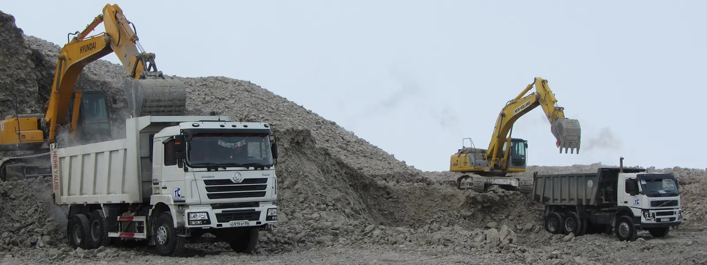
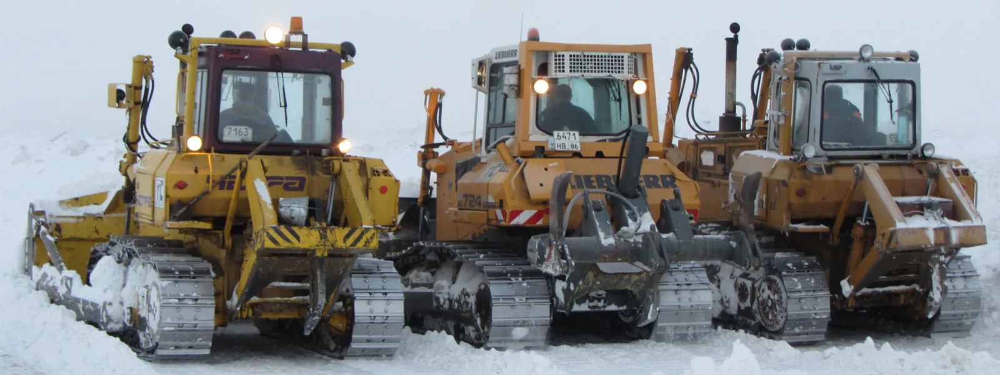
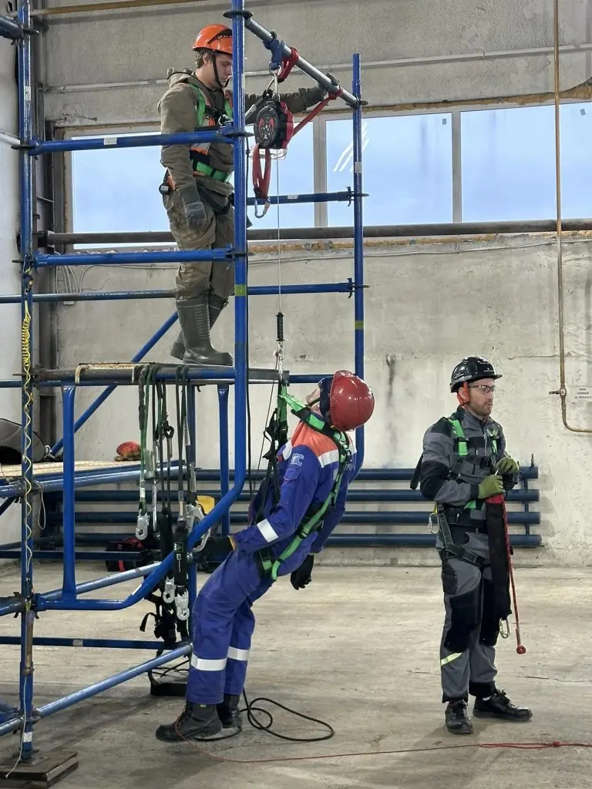
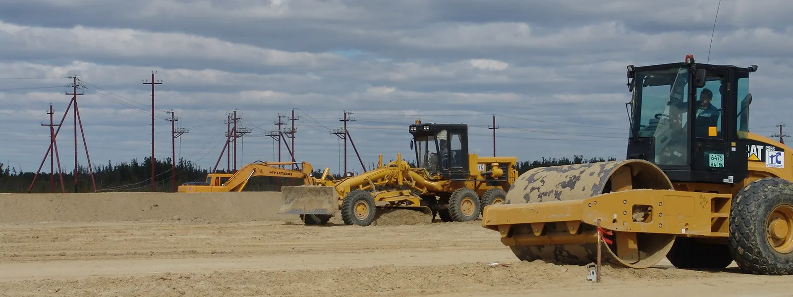
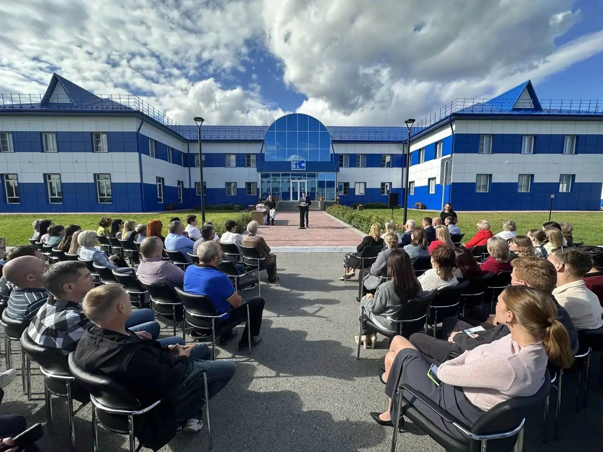

Строим объекты ТЭК от болота до ввода в эксплуатацию
Подрядная строительная компания из Нягани. С 1999 года строим и реконструируем промышленные объекты топливно-энергетического комплекса.

Площадка растёт слоями
Полный комплекс работ: от проекта до ввода. Отметьте нужные слои, они попадут в запрос.
Объекты в кубометрах, километрах и гектарах
- Заказчик
- Что сделано
Более 800 единиц своей техники
Вся техника оснащена программами спутникового мониторинга. Работаем автономно: вахтовые городки, столовые, медпункты и спортзалы стоят прямо на участках.

- Землеройная
- Бульдозеры, экскаваторы
- Грузоподъёмная
- Автокраны, манипуляторы, погрузчики
- Дорожная
- Грейдеры, катки, самосвалы
- Транспортная
- Автобусы, вездеходы, легковые автомобили
- Специальная
- Топливозаправщики, тралы, дизельные электростанции, передвижные мастерские, водовозки
- Лесной комплекс
- Валочно-пакетирующие машины, скидеры, трелевочные тракторы, мульчеры
Caterpillar, John Deere, Volvo, Liebherr, Hyundai, MAN, Toyota

Жизнь и здоровье ценим выше результатов
- На дорогеСистема помощи водителю Mobileye, ГЛОНАСС, тахографы, двусторонние видеорегистраторы, датчики Антислип
- На участкеМодульные фельдшерские пункты, медицинский персонал круглосуточно
- В классеСобственный обучающий класс с лицензионными программами
- В лабораторииСертифицированная строительная лаборатория работает прямо на объектах, к каждому проекту прикреплён специалист контроля качества
Победитель конкурса РСПП «Лидеры российского бизнеса» 2018 года за достижения в области охраны труда.
Победитель конкурсов «Эко-Лидер» среди подрядчиков «Газпромнефть-Ямал» и «Газпромнефть-Заполярье», 2019.
Расскажите, что строим
Выберите виды работ и грунт. Запрос придёт на tss@talspecstroi.ru.


Кому звонить
- ПриёмнаяЗаказчикам и партнёрам+7 (34672) 2-07-29
- Служба по подбору персоналаВакансиидоб. 144
- Кадровое делопроизводствоДокументы сотрудниковдоб. 175
- Кадровая логистикаДорога на вахтудоб. 111
tss@talspecstroi.ru